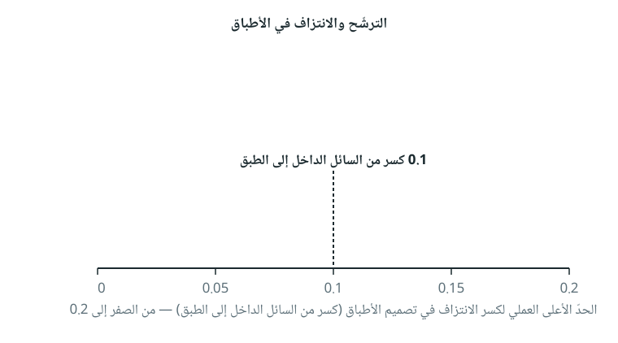

الترشّح والانتزاف في الأطباق
Weeping and Entrainment
حدّان متقابلان لمجال تشغيل الطبق: الترشّح تسرّب السائل من ثقوب الطبق حين تقلّ سرعة البخار، والانتزاف حمل البخار قطرات سائلة إلى الطبق الأعلى حين تزيد.
الترشّح والانتزاف حدّان لسعة تشغيل الطبق المثقّب، يقع بينهما مجال التشغيل المستقرّ. الترشّح (weeping) هو تسرّب السائل من ثقوب الطبق إلى الطبق الأسفل بدل أن يبقى على الطبق ويجري إلى الحاجز السفلي. ويحدث حين تنخفض سرعة البخار عبر الثقوب انخفاضًا لا يكفي لحمل عمود السائل فوقها، فيغلب وزن السائل ضغط البخار. ويُسمّى الحمل الأدنى الذي يبدأ عنده التسرّب نقطة الترشّح، وهي الحدّ الأدنى لسرعة البخار المصمَّم بها. والانتزاف (entrainment) هو حمل البخار قطرات سائلة من الطبق إلى الطبق الأعلى؛ ويزداد بشدّة مع سرعة البخار حتى يبلغ الإغراق. ويُقاس الانتزاف ككسر من السائل الداخل إلى الطبق، وتذكر مراجع التصميم أن الحدّ الأعلى العملي له نحو 0.1، وأن تجاوزه يضرّ الكفاءة. والحدّان متقابلان: خفض الحمل يقرّب من الترشّح، ورفعه يقرّب من الانتزاف، فمجال التشغيل محصور بينهما، ويضيق في الأطباق ذات الثقوب الكبيرة أو الحمل السائلي المنخفض.
كيف تعمل الظاهرة؟
الآلية موازنة ضغط على فتحة الطبق. يحمل البخار الصاعد عبر الثقب عمود السائل فوقه؛ فإذا كان ضغط البخار كافيًا بقي السائل على الطبق وانتفخ في رغوة تُلامس البخار. وإذا انخفضت السرعة عبر الثقوب دون حدّ معيّن، غلب الوزن الساكن للسائل ضغط البخار فانساب من الثقوب إلى الطبق الأسفل: هذا هو الترشّح. وفي الطرف المقابل، حين تزيد السرعة تزداد قوى السحب على سطح الرغوة فتنفصل قطرات وتُحمل إلى الطبق الأعلى: هذا هو الانتزاف. وكلّما زادت السرعة زاد كسر السائل المحمول، وتزداد الظاهرة حساسية لقطر الثقب وكثافة البخار وعمق السائل على الطبق.
العلاقة بالأرقام
تُقدَّر نقطة الترشّح بعلاقة إدولجي: u_h(min) = [K₂ − 0.90(25.4 − d_h)]/(ρ_v)^0.5، حيث u_h أدنى سرعة بخار عبر الثقوب بوحدة m/s، وd_h قطر الثقب بوحدة mm، وK₂ ثابت يعتمد على عمق السائل الصافي على الطبق (ارتفاع الحاجز زائد ارتفاع القمة فوقه). وفي المثال المرجعي عند d_h = 5 mm وK₂ = 30.6 وρ_v = 0.72 kg/m³ تكون u_h(min) ≈ 14 m/s. ويُقاس الانتزاف كسرًا من السائل الداخل إلى الطبق، ويُقرأ من ارتباط فير (1961) بدلالة معامل التدفّق F_LV، ويُعدّ الحدّ الأعلى العملي نحو 0.1.
مفاهيم متقاربة
التمييز الأول: الترشّح والانتزاف يعملان في اتجاهين متعاكسين، فالترشّح يحدث عند الحمل المنخفض والانتزاف عند الحمل المرتفع، ولذلك يُحدَّد مجال تشغيل الطبق بالحدّين معًا لا بحدّ واحد. التمييز الثاني: الترشّح يخفض الكفاءة لأنه يعيد السائل إلى طبق أسفل بتركيب أقرب إلى القاع، فيُفسد التدرّج الرأسي للتركيب؛ والانتزاف يخفض الكفاءة لأنه يعيد سائلًا غنيًّا بالمكوّن الأخفّ إلى طبق أعلى. التمييز الثالث: الانتزاف ظاهرة مستمرة تزداد مع السرعة، أما الإغراق فحالة نهائية تنقطع عندها الاستقرارية، والانتزاف أحد مساراته.
حدود التطبيق
علاقة إدولجي ارتباط تجريبي مبنيّ على بيانات أطباق مثقّبة، ولا تُنقل إلى أطباق صمّامية أو غطائية بلا تحقّق. وK₂ يُقرأ من منحنى يعتمد على عمق السائل الصافي، فأي خطأ في تقدير ارتفاع القمة فوق الحاجز ينتقل إلى السرعة المحسوبة. وارتباط فير للانتزاف مشروط بحدود: قطر ثقب أقل من 6.5 mm، وارتفاع حاجز أقل من 15% من المسافة بين الأطباق، وأنظمة غير راغية، ونسبة مساحة الثقوب إلى المساحة النشطة أكبر من 0.10، وتوتر سطحي 0.02 N/m؛ وخارج هذه الشروط تُطبَّق معاملات تصحيح. والحدّ 0.1 للانتزاف دليل تقريبي لا حدّ صارم، وقد يكون التصميم الأمثل أعلى منه في بعض الحالات.

| الكمية | القيمة | المصدر |
|---|---|---|
| الحدّ الأعلى العملي لكسر الانتزاف في تصميم الأطباق | 0.1 كسر من السائل الداخل إلى الطبق | [1] |
| معامل 0.90 في علاقة إدولجي لنقطة الترشّح | 0.90 بلا بُعد | [1] |
| قطر الثقب في مثال التصميم المرجعي لحساب نقطة الترشّح | 5 mm | [1] |
| سرعة الترشّح المحسوبة في المثال المرجعي | 14 m/s | [1] |
المصادر
- 1 Chemical Engineering Design — §11.13.5 Entrainment و§11.13.6 Weep Point — Elsevier Butterworth-Heinemann — Coulson & Richardson's Chemical Engineering, Vol. 6, 4th ed. (R. K. Sinnott) (2005). · اطُّلع عليه 2026-11-28
- 2 Equipment for Distillation, Gas Absorption, Phase Dispersion, and Phase Separation — System Limit and Entrainment Flooding — McGraw-Hill — Perry's Chemical Engineers' Handbook, 8th ed., Sec. 14 (2008). people.ysu.edu/~dmprice/CHEN%204887/Packed%20Bed%20flooding.pdf · اطُّلع عليه 2026-11-28
استشهد بهذا المصطلح
الصيغتان مبنيتان من بيانات الصفحة نفسها: العنوان والتاريخ ورابط النسخة المنشورة.
الترشّح والانتزاف في الأطباق — Weeping and Entrainment. (2026). ديوان المعرفة — انفراد. https://infiradev.com/diwan/terms/term-weeping-and-entrainment.html
@misc{term-weeping-and-entrainment2026,
title = {الترشّح والانتزاف في الأطباق},
titleaddon = {Weeping and Entrainment},
howpublished = {{ديوان المعرفة — انفراد} — مرجع علمي عربي},
year = {2026},
url = {https://infiradev.com/diwan/terms/term-weeping-and-entrainment.html},
urldate = {2026-11-28},
note = {مراجعة علمية: Abdullah Al-Huwaidi}
}
راجعه: Abdullah Al-Huwaidi · 2026-11-28 · آخر تحديث 2026-11-28